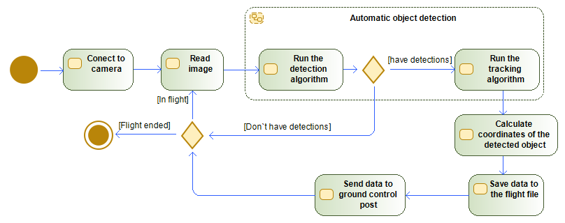

Bogdan Grabovskiy
Our team

B. A. Grabovskiy
Developer
M. O. Vinnyk
Supervisor
Introduction
The goal of our project is to develop a methodology for creating system of automatic collection of geospatial data using the example of a fire detection system.
It will solve the following tasks:
- Automation of spatial data collection;
- Calculation of object coordinates;
Object detection algorithms
During the study, several detection algorithms were considered:
- Faster R-CNN (Region-based Convolutional Neural Networks).
- SSD (Single Shot MultiBox Detector).
- Mask R-CNN.
- RetinaNet.
- YOLO (You Only Look Once).
Why YOLO?
There are reasons why the YOLO algorithm was chosen for this project:
- The main difference between YOLO and other methods is that it performs object detection of the entire image at once. This allows you to get the result quickly and efficiently, without the need to re-process the image.
- The algorithm is easy to teach to detect special objects.
- A model of this type is easy to adjust to the calculating capacities of the unit
The program algorithm
Main cycle
while ret :
ret, img = cap.read()
if ret == False:
break
results = model(img, stream = True)
Detected = np.empty((0,5))
for r in results:
boxes = r.boxes
for box in boxes:
SmokeImgCoord =None
score = box.conf[0]
if score>0.6:
x1,y1,x2,y2 = box.xyxy[0]
x1,y1,x2,y2 = int(x1),int(y1),int(x2),int(y2)
Detected=np.vstack((np.array([x1,y1,x2,y2,score]),Detected))
SmokeimgCoord = [int(x1 +(x2-x1)/2),int(y2)]
Size = img.shape
cv2.rectangle(img,(x1,y1),(x2,y2),(255,0,255),3)
line = CoordCalk.LineCalculation(SmokeimgCoord,DroneCoord,DroneCameraOrient,CameraAngle,Size)
Coord = line.Coord(20)
if y1<30:
textCoord = (x1,30)
else:
textCoord = (x1,y1)
cv2.putText(img,(str(int(score.item()*10)/10) + ' coord: ' + str(Coord[0]) + ' ' + str(Coord[1])),textCoord,font,1,(255,0,0),2,cv2.LINE_4)
cv2.putText(img,(str(int(DroneCoord[0])) + ' ' + str(int(DroneCoord[1]*100)/100) + ' ' + str(int(DroneCoord[2]))),(10,50),font,1,(255,0,0),2,cv2.LINE_4)
Indecsated = Lap_tracker.update(Detected)
for result in Indecsated:
x1,y1,x2,y2,id=result
if id in Detected_Laps.keys():
Detected_Laps[id].append([x1,y1,x2,y2,ImageCount])
else:
Detected_Laps[id] = [[x1,y1,x2,y2,ImageCount]]
Coordinate calculation
def RightVectorCalculate(vector):
if vector[0]==0:
y = 0
if vector[1]==0 or vector[1]<0:
x = 1
elif vector[1]>0:
x = -1
elif vector[0]>0:
y = math.sqrt(1/(1+pow((-1)*vector[1]/vector[0],2)))
x = -1*(y*vector[1]/vector[0])
elif vector[0]<0:
y = -1*math.sqrt(1/(1+pow((-1)*vector[1]/vector[0],2)))
x = -1*(y*vector[1]/vector[0])
return([x,y,0])
def UpVectorCalculate(vector1,vector2):
x = None
y = None
z = None
if vector2[0]!=0:
z = math.sqrt(1/(1+pow(vector1[2]/((vector1[0]*vector2[1]/vector2[0])-vector1[1]),2)+pow((vector2[1]*vector1[2])/((vector1[1]*vector2[0])-(vector1[0]*vector2[1])),2)))
y = (vector1[2]*z)/((vector1[0]*vector2[1]/vector2[0])-vector1[1])
x = (vector2[1]*vector1[2]*z)/((vector1[1]*vector2[0])-(vector1[0]*vector2[1]))
else:
y = 0
if vector1[0]!=0:
z = math.sqrt(1/(1+(-1*vector1[2]/vector1[0])^2.0))
x = -1*vector1[2]/vector1[0]*z
else:
z = 0
x = 1
return([x,y,z])
def VectorFromAngle(pitch,yaw):
x = None
y = None
z = None
z = math.sin(pitch)
x = math.cos(yaw)*math.cos(pitch)
y = math.sin(yaw)*math.cos(pitch)
return([x,y,z])
def ChangeBasis(Vector,upVector,forvardVector,rightVector):
x = None
y = None
z = None
z = Vector[0]*forvardVector[2] + Vector[1]*rightVector[2] + Vector[2]*upVector[2]
y = Vector[0]*forvardVector[1] + Vector[1]*rightVector[1] + Vector[2]*upVector[1]
x = Vector[0]*forvardVector[0] + Vector[1]*rightVector[0] + Vector[2]*upVector[0]
return([x,y,z])
def LineCalculation(pilarImgCoord,droneCoord,droneCameraOrient,cameraAngle,imgShape):
forvardVector = VectorFromAngle(droneCameraOrient[0],droneCameraOrient[1])
rightVector = RightVectorCalculate(forvardVector)
upVector = UpVectorCalculate(forvardVector,rightVector)
X= pilarImgCoord[0]/imgShape[1]-0.5
Y= -1*(pilarImgCoord[1]/imgShape[1]-0.5)
objectVectorCam = VectorFromAngle(Y*cameraAngle,X*cameraAngle)
objectVector = ChangeBasis(objectVectorCam,upVector,forvardVector,rightVector)
return(Line(droneCoord,objectVector))
Virtual environment
Due to the lack of opportunity to use the system in war conditions. A virtual environment based on Unreal Engine was created for testing.